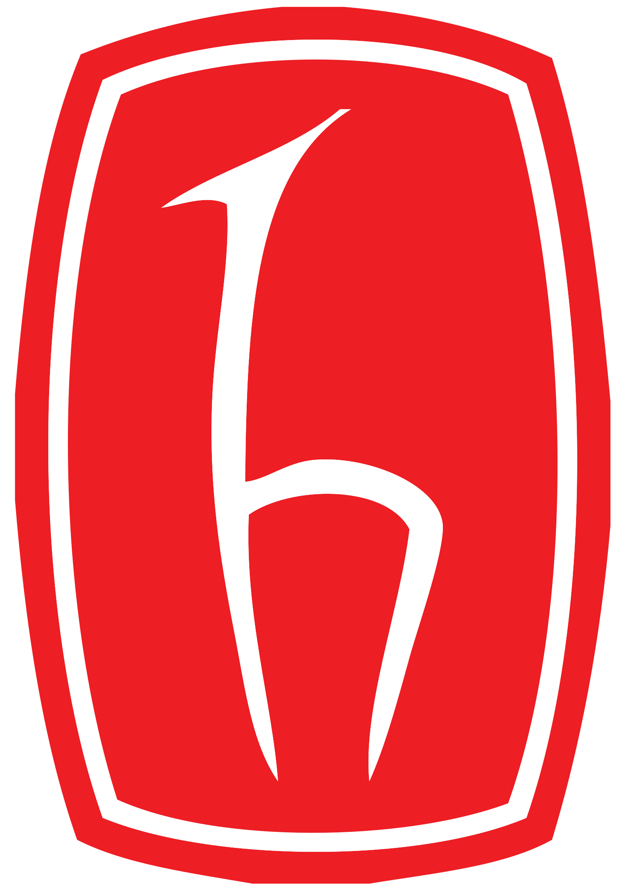

Eğitim hayatım boyunca edindiğim teorik bilgileri pratiğe döktüğüm projeler ve önemli tecrübeler kazandığım stajlarım aşağıda detaylandırılmıştır.

Bitirme Projesi - Kısa Süreli MEO Uydu Yörünge Entegrasyonu
2024 - 2025 | Hacettepe Üniversitesi | Danışman: Doç. Dr. Kamil Teke
- GPS uydularının kısa süreli yörüngelerini hassas bir şekilde tahmin etmek için bir yazılım aracı geliştirildi.
- Yörünge hareketini etkileyen bozucu faktörler dikkate alındı.
- Sayısal entegrasyon için Runge-Kutta metodu gibi ileri hesaplama teknikleri kullanıldı.
Yaz Mühendisliği Stajyeri - Öksüt Madencilik
Ağustos 2024 - Eylül 2024 | Develi/Kayseri
- Maden sahasında drone ile haritalama ve veri toplama çalışmaları yürüttüm.
- Total Station ve GNSS cihazları kullanarak hassas ölçümler aldım.
- AutoCAD Civil 3D ile yüzey modelleme ve yol tasarımı yaptım.
Yaz Mühendisliği Stajyeri - SNH İnşaat A.Ş.
Temmuz 2023 - Ağustos 2023 | Adana/Ceyhan
- Yol tesviyesi, köprü inşaatı ve duvar kaplama gibi işlerde görev aldım.
- Şantiye ortamında Total Station ve GPS kullanarak saha çalışmalarını yürüttüm.